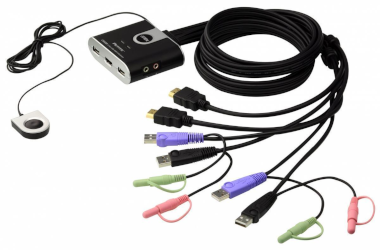

Описанные здесь действия позволяют настраивать клавиатуру и мышь при подключении их к компьютеру через KVM Switch. Т.к. неинтеллектуальные KVM свитчи отключают устройства от системы, то все настройки клавиатуры/мыши в Linux сбрасываются, и их нужно автоматически перенастраивать при каждом переключении KVM свитча.

Что значит "сбрасываются настройки"? Мышь и клавиатура перестают работать? Нет. Сбрасываются "тонкие" настройки устройств. Для клавиатуры может сброситься в стандартное значение скорость срабатывания автоповтора клавиши. Для мышки могут сброситься значения ускорения и скорости перемещения. Происходит это потому, что обычно в Linux-системах параметры мышки и клавиатуры устанавливаются в момент логина пользователя в сессию X-сервера. А при подключении/переключении клавиатуры и мышки через KVM в течении X-сессии, параметры не "переприменяются", и подключаемые устройства подключаются со сброшенными параметрами.
Не все пользователи замечают изменения этих параметров. Но при их сбросе на некие стандартные значения, работать становится не очень комфортно.
ПримЕсли DE имеет диалог настройки клавиатуры/мышки, то эти настройки в последующем устанавливаются только при запуске графического сеанса. Возможно, есть продвинутые DE, которые делают настройки известных HID устройств при каждом их подключении, однако на практике автору статьи такие DE не встречались.
Описанные здесь действия проверены в Astra Linux 1.6 (среда FLY DE), но они подходят для всех DEBIAN подобных дистрибутивов Linux, например имеющих среду LXDE.
* * *
1) Устанавливаем пакет at, который позволит делать отложенный запуск скрипта. Это необходимо для выполнения скрипта настройки клавиатуры и мыши с задержкой после их подключения. Связано это с тем, что система UDEV выдает событие подключения раньше, чем устройство начинает быть доступно для настройки через xinput и xset.
# apt-get install at
2) Создаем 2 скрипта (в моем случае, скрипты лежат в каталоге /home):
Первый скрипт /home/kvm-fix1.sh - будет запускаться непосредственно при подключении устройства через правило udev:
#!/bin/bash
echo /home/kvm-fix2.sh | at now
Команда at, помимо того, что дает небольшую задержку в выполнении скрипта, запущенного через нее, еще "отрывает" выполнение скрипта от текущего потока выполнения. То есть, эта команда помещает вызов второго скрипта в расписание, и он выполняется отдельно, а не в потоке исполнения, который породило правило UDEV. Это нужно потому, что пока не закончится поток, созданный правилом UDEV, подключаемые устройства не будут доступны для конфигурирования, выше это уже объяснялось.
Второй скрипт /home/kvm-fix2.sh - будет запускаться из первого скрипта с отложенным выполнением через ранее установленную команду at:
#!/bin/bash
sleep 1
# вывод в файл выполняемых команд (для отладки скрипта)
#exec > /home/script_log.txt 2>&1
#set -x
mouseId='8'
sessions=`ps -ef | awk '{if ($8 == "/usr/lib/xorg/Xorg") print $13 "," $22}'`
for s in ${sessions}
do
display=`echo "$s" | cut -d, -f1`
auth=`echo "$s" | cut -d, -f2`
export DISPLAY="$display"
export XAUTHORITY="$auth"
xset r rate 200 25 # keyboard delay and repeat
xinput set-prop $mouseId "Device Accel Profile" -1
xinput set-prop $mouseId "Device Accel Constant Deceleration" 0.77
done
#xinput list > /home/script_done.txt
В этом скрипте в переменную sessions попадает два значения, разделенных запятыми - номер дисплея и параметры авторизации. Если логинов несколько, то таких парных значений тоже будет несколько, и эти пары будут разделены символом перевода строки. В команде, формирующей эту переменную, используются номера столбцов 8, 13, 22, берущихся из вывода команды ps -ef. В разных системах эти номера могут различаться в зависимости от настроек запуска X-сервера.
В данном случае, в столбце 8 находится имя бинарника X-сервера. В столбце 13 - номер дисплея, который выглядит обычно как ":0". В столбце 22 - значение опции -auth, например "/var/run/xauth/A:0-qyWmsc".
Настройки мыши
Во втором скрипте присутствует переменная с идентификатором устройства мыши mouseId, которая используется в команде xinput. Если настройка скорости мыши не требуется, то можно просто закомментировать эти строки. Если настройка мыши планируется, то значение идентификатора мыши можно узнать, выполнив команду:
# xinput list
С помощью идентификатора устройства можно так же узнать состав параметров, которые можно настраивать для этого устройства. Делается это командой:
xinput --list-props <id_устройства>
В разных Linux-системах одна и та же мышь может иметь различные параметры настройки, которые, по всей видимости, как-то зависят от драйвера ядра, это следует учитывать. Например в одной версии системы настройки мышки можно выполнить так:
xinput set-prop $mouseId "Device Accel Profile" -1
xinput set-prop $mouseId "Device Accel Constant Deceleration" 0.82
А в другой версии системы настройки той же самой мышки могут выглядеть так:
xinput --set-prop $mouseId 'Coordinate Transformation Matrix' 1 0 0 0 1 0 0 0 1
xinput --set-prop $mouseId 'libinput Accel Profiles Available' 0 0
xinput --set-prop $mouseId 'libinput Accel Speed' -0.48
xinput --set-prop $mouseId 'libinput Accel Profile Enabled' 0 0
Если нужно настроить ускорение мыши, то значение параметра Device Accel Constant Deceleration или libinput Accel Speed можно подобрать под себя. То же самое касается и других параметров.
Если мышь подключена не напрямую в порт компьютера, а через разветвитель USB-портов (так приходится делать на ноутбуках, у которых всего 2 USB-порта, а нужно подключать больше устройств, например FLASH + внешнюю клавиатуру + мышь), то идентификатор мышки может изменяться от включения к включению. В этом случае статический mouseId, просто прописанный в скрипте, не подходит. Но можно динамически определять идентификатор мышки такой командой:
mouseId=`xinput | grep -P -o 'A4TECH USB Device\s*id=\d*' | cut -d= -f2`
Где A4TECH USB Device - уникальное имя устройства, которое видно в выводе xinput. Чтобы получить динамический mouseId, команду его получения нужно поместить вовнутрь цикла после установки переменных DISPLAY и XAUTHORITY, чтобы xinput нормально срабатывал от рута или системного пользователя, под которым выполняется скрипт в момент срабатывания правила.
Настройка клавиатуры
Настройка клавиатуры во втором скрипте осуществляется командой:
xset r rate <delay> <repeat_frequence>
где первое число определяет задержку перед началом повтора ввода при зажатой клавише, а второе - частота повтора. Оба параметра можно подобрать под себя.
Примечание
Закоментированные в срипте команды можно использовать для отладки, если после выполнения всех действий что-то идет не так.
3) Создать правило для udev, которое будет вызывать скрипт при подключении устройства. Все правила располагаются в каталоге /etc/udev/rules.d. Создадим там файл 10-kvm-fix.rules следующего содержания:
SUBSYSTEMS=="input",ATTRS{name}=="Logitech MX Master 3",RUN+="/home/kvm-fix1.sh"
В приведенном примере правила указаны условия срабатывания SUBSYSTEMS и ATTRS{name} (они сделаны в виде условий, и сравнение через символы "==" говорит о том, что происходит проверка условия, а не присваивание значения).
Чтобы создать список условий (перечисляемых через запятую), однозначно определяющих подключение нужного устройства, необходимо выполнить следующие действия:
Для Astra Linux 1.6:
- открыть «Менеджер устройств» и найти там свою мышь. Во вкладке Описание будет написан Производитель, Изделие, Подсистема и т. д. Там же будет написан и Путь sysfs.
- скопировать значение Путь sysfs и выполнить команду в консоли:
# udevadm info -a -p <скопированный_путь>
- в выводе найти «абзац», который содержит название мыши (убедиться, что в этом абзаце SUBSYSTEMS=="input") и использовать строку ATTRS{name}=="<имя_устройства>" в создаваемом правиле.
Для прочих Linux-систем
Альтернативный способ получить sysfs-путь - это воспользоваться командой:
cat /proc/bus/input/devices
В выводе данной команды можно найти устройство с нужным именем и его sysfs-путь. Этот путь можно скормить команде udevadm, как это продемонстрировано для Astra Linux.
Созданное правило начинает работать сразу, поэтому для проверки достаточно переключить KVM свтч на второй компьютер и обратно. Если настройки не стали ощутимы, то следует во втором скрипте kvm-fix2.sh раскоментить отладочные команды и смотреть создаваемые ими файлы.
Если все было сделано правильно, автоматическое применение настроек должно сразу срабатывать.